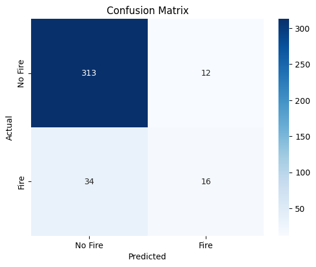

import pandas as pd
import numpy as np
from sklearn.model_selection import train_test_split
from sklearn.naive_bayes import GaussianNB
from sklearn.metrics import accuracy_score
from itertools import chain, combinations
from sklearn.metrics import confusion_matrix
import seaborn as sns
import matplotlib.pyplot as plt
from sklearn.metrics import accuracy_score, classification_report, confusion_matrixCA_climate_fire = pd.read_csv('../data/cleaned-data/CA_climate_fire.csv')CA_climate_fire_filtered = CA_climate_fire[['tempmax', 'tempmin', 'humidity', 'precip', 'windspeed', 'fire']]
print(CA_climate_fire_filtered.head()) tempmax tempmin humidity precip windspeed fire
0 14.3 5.4 85.7 0.000 11.2 No
1 17.0 4.2 78.1 0.000 19.0 No
2 15.0 3.8 83.0 0.000 9.0 No
3 13.6 5.7 89.6 1.736 16.7 No
4 15.1 3.2 80.9 0.000 16.2 No# Split the dataset into features and the target variable
X = CA_climate_fire_filtered.drop(columns=["fire"])
y = CA_climate_fire_filtered["fire"]
# Split the data into training and testing sets
X_train, X_test, y_train, y_test = train_test_split(X, y, test_size=0.2, random_state=42)
def powerset(iterable):
s = list(iterable)
return chain.from_iterable(combinations(s, r) for r in range(len(s)+1))
# Initialize variables to keep track of the best feature set and its accuracy
best_feature_set = None
best_accuracy = 0.0
# Generate all possible feature combinations using the powerset function
all_feature_combinations = list(powerset(X.columns))
# Loop through each feature combination
for feature_set in all_feature_combinations:
if len(feature_set) > 0: # Skip the empty set
# Subset the training and testing data using the current feature set
X_train_subset = X_train[list(feature_set)]
X_test_subset = X_test[list(feature_set)]
# Initialize and train a Gaussian Naïve Bayes classifier
gnb = GaussianNB()
gnb.fit(X_train_subset, y_train)
# Make predictions on the testing data
y_pred = gnb.predict(X_test_subset)
# Calculate accuracy
accuracy = accuracy_score(y_test, y_pred)
# Update the best feature set if the current one is better
if accuracy > best_accuracy:
best_accuracy = accuracy
best_feature_set = feature_set
# Print the best feature set and its accuracy
print("Best Feature Set:", best_feature_set)
print("Best Accuracy:", best_accuracy)Best Feature Set: ('tempmax', 'tempmin')
Best Accuracy: 0.8773333333333333# Split the dataset into features (X) and the target variable (y)
X = CA_climate_fire_filtered[['tempmax', 'tempmin']]
y = CA_climate_fire_filtered['fire']
# Split the data into training and testing sets
X_train, X_test, y_train, y_test = train_test_split(X, y, test_size=0.2, random_state=42)
# Initialize and train the Gaussian Naïve Bayes classifier
gnb = GaussianNB()
gnb.fit(X_train, y_train)
# Make predictions on the testing data
y_pred = gnb.predict(X_test)
# Model Evaluation
accuracy = accuracy_score(y_test, y_pred)
confusion = confusion_matrix(y_test, y_pred)
report = classification_report(y_test, y_pred)
print("Accuracy:", accuracy)
print("Confusion Matrix:")
print(confusion)
print("Classification Report:")
print(report)
# Display the confusion matrix
sns.heatmap(confusion, annot=True, fmt='d', cmap='Blues',
xticklabels=['No Fire', 'Fire'],
yticklabels=['No Fire', 'Fire'])
plt.xlabel('Predicted')
plt.ylabel('Actual')
plt.title('Confusion Matrix')
plt.show()Accuracy: 0.8773333333333333
Confusion Matrix:
[[313 12]
[ 34 16]]
Classification Report:
precision recall f1-score support
No 0.90 0.96 0.93 325
Yes 0.57 0.32 0.41 50
accuracy 0.88 375
macro avg 0.74 0.64 0.67 375
weighted avg 0.86 0.88 0.86 375
